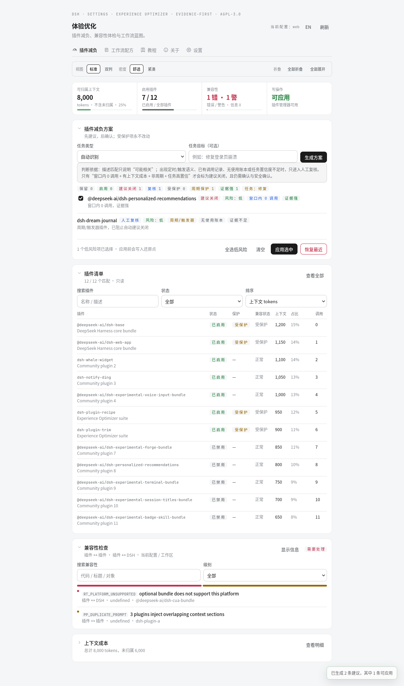

任务相关
描述匹配，只算相关
关键词命中不单独构成“用不上”。
DSH · PLUGIN CHECKUP
DSH 插件体检把插件常驻成本、兼容性检查和误关风险放进一次可解释的体检。少一点插件负担，多一点兼容确定性。
npm i dsh-plugin-trim
省略版本号即最新版 · 两个插件可独立或同时使用

工具调用看得见，插件的提示词和工具描述却一直在后台占位。先量出来，再决定关掉什么。
示例降幅，不是关闭目标
54% 是示例数据，不是你的 profile；关错了比开着更贵。
−1,312 tokens · 示例降幅 54%
判断不是只看词像不像：先看本任务/会话是否调用，再看账本、周期与成本；任一不确定只进入复核。
平时不吭声、关键时刻才出手的插件最容易被误关；周期/触发、已有调用、无账本都会先保护或复核。
02 / EVIDENCE CHAIN
先看本任务/会话有没有调用，再看账本、周期和成本。词像不像只是弱信号，不能单独判“用不上”。
任务相关
关键词命中不单独构成“用不上”。
使用账本
历史或本会话调用过，就不自动建议关闭。
定时 / 触发
schedule、cron、提醒、dream 等语义硬保护。
上下文成本
没有可归属成本的插件，进入复核而不是候选。
RESULT
即使成为候选，也仍然需要确认与 host 审批 allowed-once。
ALLOWED · ONCEINTERLUDE 02 / TWO LENSES
成本告诉你去哪里看；证据决定你能不能关。
常驻 token、可归属与未归属，只说明成本，不是关闭理由。
2,417 → 1,105 · sample profile调用、周期、账本与置信度，缺一项就进入复核。
strong evidence → candidatedsh-plugin-trim
先量上下文占比与兼容性，再给出可解释的保留/启用/关闭建议；低风险项经确认与安全审批后应用。
dsh-plugin-recipe
把业务目标翻译成可校验、可导出的工作流蓝图，每一步都标注审批级别。

04 / SAFETY IS A VERB
只读分析、低风险、安全确认、还原点。没有任何一步靠“相信模型”。
省略版本号即 latest。两个包都可以单独安装。
可选工作流配方：npm i dsh-plugin-recipe
默认保守：没有使用账本、任务置信度不够、带定时/触发语义，或已有调用记录时，只进入复核。
带“每月/每周/定时/提醒/日程/dream”等语义的插件会被硬保护；也可以加入 protect 列表。
每次应用前写入还原点。在界面点击“恢复最近”，或调用 trim_rollback_profile；恢复同样需要安全确认。
confirm: true 只是提案标记。宿主审批返回 allowed-once 才是授权；拒绝、取消或审批不可用时一律不写入。
AGPL-3.0 · 作者 Starlit Sky · 先体检，再决定关什么。
QQ 群：1134419871
捐赠方式：待补充。当前也可以通过反馈、文档和插件试用来支持。
AGPL-3.0-only · Copyright © 2026 Starlit Sky